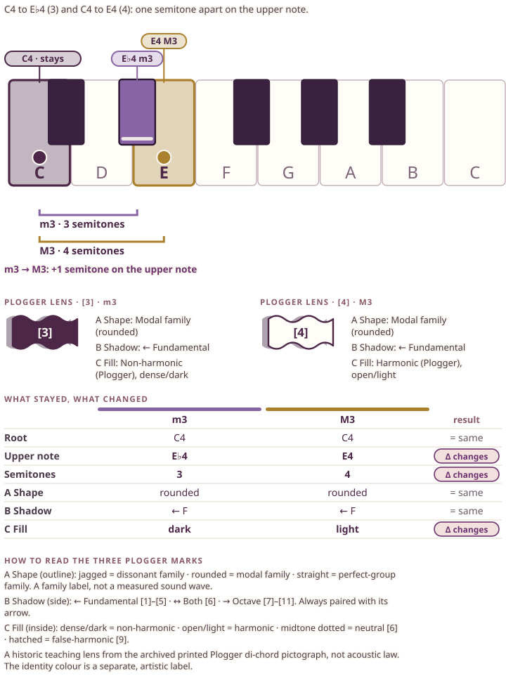
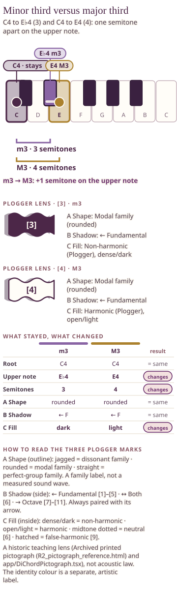
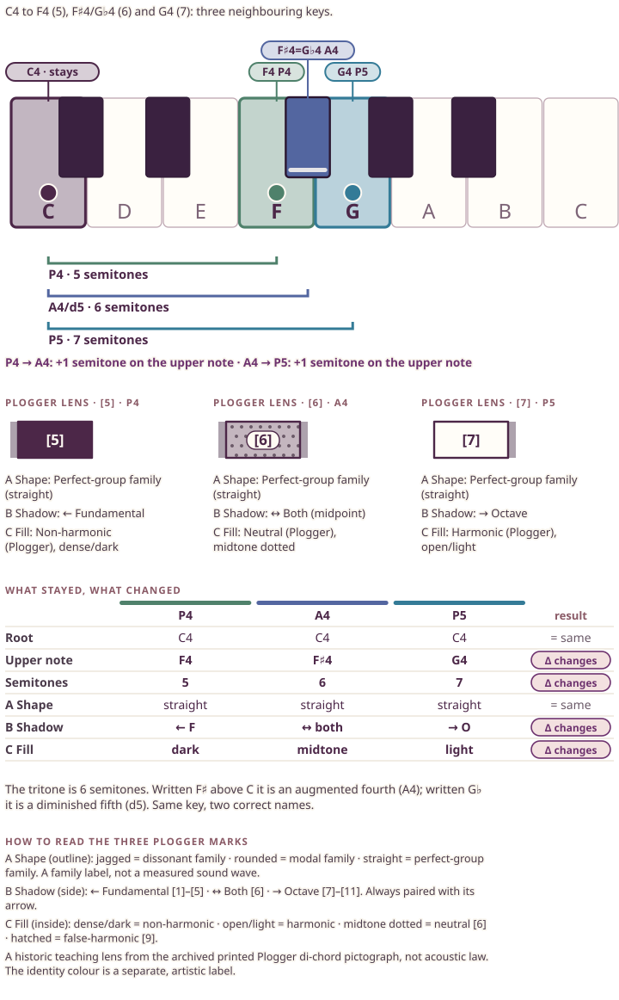
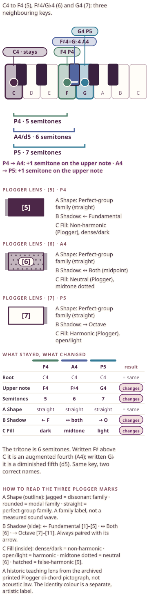
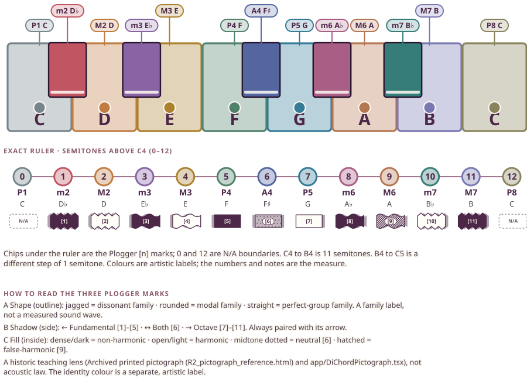
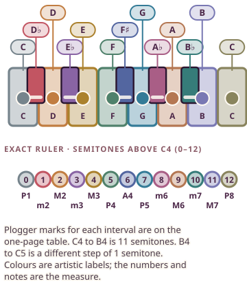

Ajourné Interval Palette · M05 information-first remediation
Three teaching proofs
Each figure answers “what stayed, what changed” from the picture itself: exact keys, exact semitones, one table.
IPF-proof-A-m3-M3
Proof A · minor third versus major third


How to read it. Read the keyboard first: C4 is the shared root (plum, stays). The upper note is E♭4 for the minor third (violet) and E4 for the major third (amber): one key apart, so 3 semitones become 4, shown as +1. Then the table: root, shape and shadow are the same; the upper note, the count and the Plogger fill change. The Plogger marks are a historic lens, not a rule about how either interval must sound.
On your own keyboard. Play C then E♭, then C then E, one after another and then together. Count the keys between C and each upper note out loud. Notice only the third note moved.
Colours are artistic identifiers. Plogger shape, shadow and fill are a historic teaching lens. Neither is acoustic fact.
IPF-proof-B-p4-tt-p5
Proof B · perfect fourth, tritone, perfect fifth


How to read it. Three upper notes sit on three neighbouring keys above C4: F (5), F♯ or G♭ (6) and G (7). The tritone is one key, written two ways: F♯ makes C to F♯ an augmented fourth, G♭ makes C to G♭ a diminished fifth. All three share the printed original's straight, perfect-group outline; the shadow arrow changes ←, ↔, → and the fill changes dark, midtone, light. Older code disagrees about [6]; this lens follows the printed original and says so.
On your own keyboard. Play C with F, with F♯, with G. Say the count for each (5, 6, 7). Then find G♭ on your keyboard and confirm it is the same key as F♯.
Colours are artistic identifiers. Plogger shape, shadow and fill are a historic teaching lens. Neither is acoustic fact.
IPF-proof-C-map
Proof C · thirteen-landmark keyboard map


How to read it. Every pitch from C4 to C5 is marked with its own fixed identity colour and name. Beneath it, an exact ruler gives 0 to 12 semitones, and each interval carries its Plogger [n] chip; 0 and 12 read N/A because the original has no di-chord there. C4 to B4 is 11 semitones; B4 to C5 is a separate step of 1.
On your own keyboard. Pick any interval on the ruler. Find C on your keyboard, count that many keys, and check the note name matches the callout.
Colours are artistic identifiers. Plogger shape, shadow and fill are a historic teaching lens. Neither is acoustic fact.